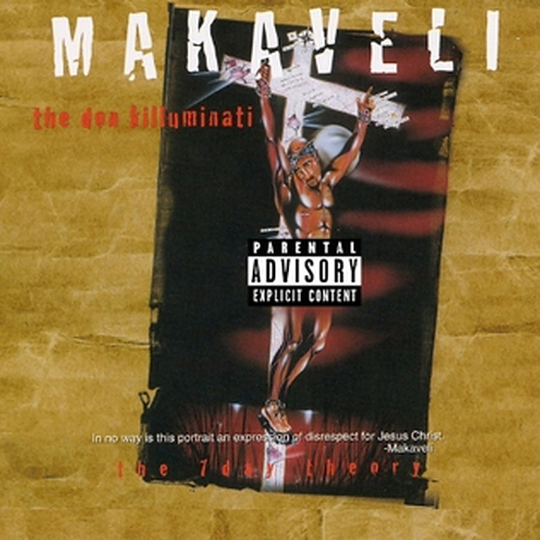
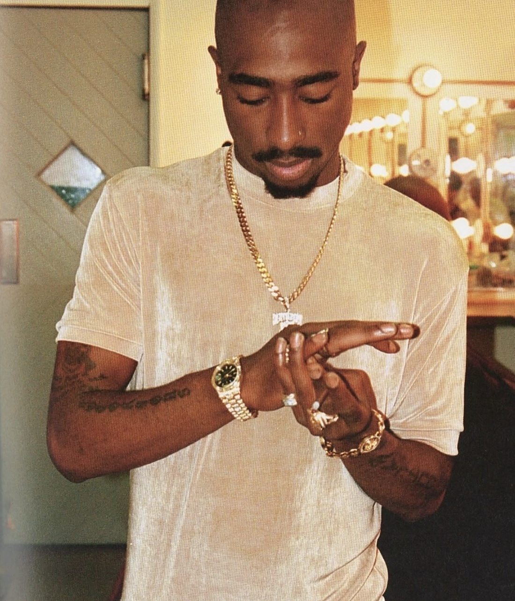

Makaveli at 30: the album 2Pac finished in a week
Thirty years ago this week, almost two months after he died, the last album Tupac Shakur completed arrived under a new name. It went straight to No. 1.
On 5 November 1996, Death Row and Interscope released The Don Killuminati: The 7 Day Theory. The name on the cover wasn't 2Pac. It was Makaveli. Tupac Shakur had been dead for less than two months, and the record most fans simply call Makaveli became the first album released after his death.
August 1996Made in one week
Pac made it at Can-Am Studios in Tarzana, in Los Angeles, and he made it fast. By most accounts the bulk of the album was written, recorded and mixed in about a week that August. Around 20 songs came out of those sessions. Only 12 made the album.
Most of the beats came from two Death Row producers, Tyrone “Hurt-M-Badd” Wrice and Darryl “Big D” Harper, with Quincy Jones III, better known as QDIII, also in the mix. You can hear the hurry in it. It's darker and angrier than All Eyez on Me, the double album he'd put out that February.
These were some of the last songs he ever recorded. On 7 September 1996 he was shot in Las Vegas, and he died six days later, on 13 September. He was 25.
The nameWhy Makaveli
The alias came from Niccolò Machiavelli, the 16th-century Italian philosopher who wrote The Prince, a book about power and how to hold on to it. Pac read it while he was in prison, and it shaped the whole record. For an artist who had spent 1996 in the middle of hip-hop's East Coast–West Coast feud, the choice said a lot about where his head was.
The coverOn the cross
The cover was painted by Ronald “Riskie” Brent, a young artist from Compton who worked as Death Row's in-house illustrator. It shows Pac on a cross, and the cross is laid over a map. A line printed across the bottom reads: “In no way is this portrait an expression of disrespect for Jesus Christ.” It was signed Makaveli.

The feudSettling scores
The album opens and closes swinging. “Bomb First” and “Against All Odds” call out his rivals by name, from Nas and Mobb Deep to Puff Daddy.
Word of what was on the album got around before it was out. Nas has said he went looking for Pac at the MTV Video Music Awards in September 1996, days before the shooting, because “there was a rumor Makaveli [was] coming out, so I really wanted to check the temperature with him.” As Nas tells it, the two talked it through. “He thought I was dissing him on the song ‘The Message,’” Nas said.
The releaseBrought forward
The album wasn't meant to come out in 1996 at all. It was planned for March 1997. After Pac's death, Death Row moved the release up by about four months, to 5 November.
The lead single, “Toss It Up”, came out shortly after he died, and it had already been through a fight of its own. The first version sounded too much like Blackstreet's “No Diggity”, a cease and desist followed, and the track had to be redone before release. Aaron Hall of Guy is among the singers on the finished song.
“To Live & Die in L.A.” and “Hail Mary” followed. None of the three singles made the Billboard Hot 100, but all three went top 20 in the UK.
The numbersStraight in at No. 1
The singles didn't need to chart. Fans showed up for the album anyway. It debuted at No. 1 on the Billboard 200, selling 664,000 copies in its first week. With All Eyez on Me having also topped the chart that February, it gave Pac two No. 1 albums in the same year. By June 1999 Makaveli had been certified four times Platinum in the United States.

Hail MaryThe song that outlived him
If one song from the album lives on, it's “Hail Mary”, recorded with his group the Outlawz. In 2003, Eminem, 50 Cent and Busta Rhymes remade it as a diss track aimed at Ja Rule. And in April 2012, when a hologram of Pac appeared on stage with Snoop Dogg and Dr. Dre at Coachella, “Hail Mary” was the first song it performed.
Thirty years onStill the last word
More albums followed after his death, but those were put together from recordings in the archive. Makaveli is the only posthumous 2Pac album he finished himself, and that's why, for a lot of fans, this is the real last 2Pac album. It still turns up on artists' own lists too: when J. Cole named his 10 favourite albums, Makaveli was one of them.
Thirty years later, it still sounds like what it was: a man in a hurry, saying everything he had left to say.
Sources
- Wikipedia: The Don Killuminati: The 7 Day Theory
- Complex: 7 things you didn't know about 2Pac's Makaveli album
- Complex: The Don Killuminati LA King's Edition vinyl
- Las Vegas Sun (15 Nov 1996): Final 2Pac CD hits chart at No. 1
- The Source: Makaveli released on this day
- XXL: Today in Hip-Hop, The Don Killuminati released
- Rock The Bells: two No. 1 albums in one year
- Wikipedia: All Eyez on Me
- Hip Hop Nostalgia: Makaveli, The Don Killuminati
- Wikipedia: Toss It Up
- Rolling Stone India: Flashback, Blackstreet's No Diggity
- Wikipedia: Hail Mary (2Pac song)
- Revolt: Nas recalls confronting Tupac about Makaveli diss
- American Songwriter: Nas shares story about Tupac
- American Songwriter: Remember when the Tupac hologram hit Coachella
- The Fader: Tupac hologram joins Dr. Dre and Snoop Dogg at Coachella
- Complex: J. Cole's 10 favorite albums
- HipHop-N-More: J. Cole names his top 10 favorite albums